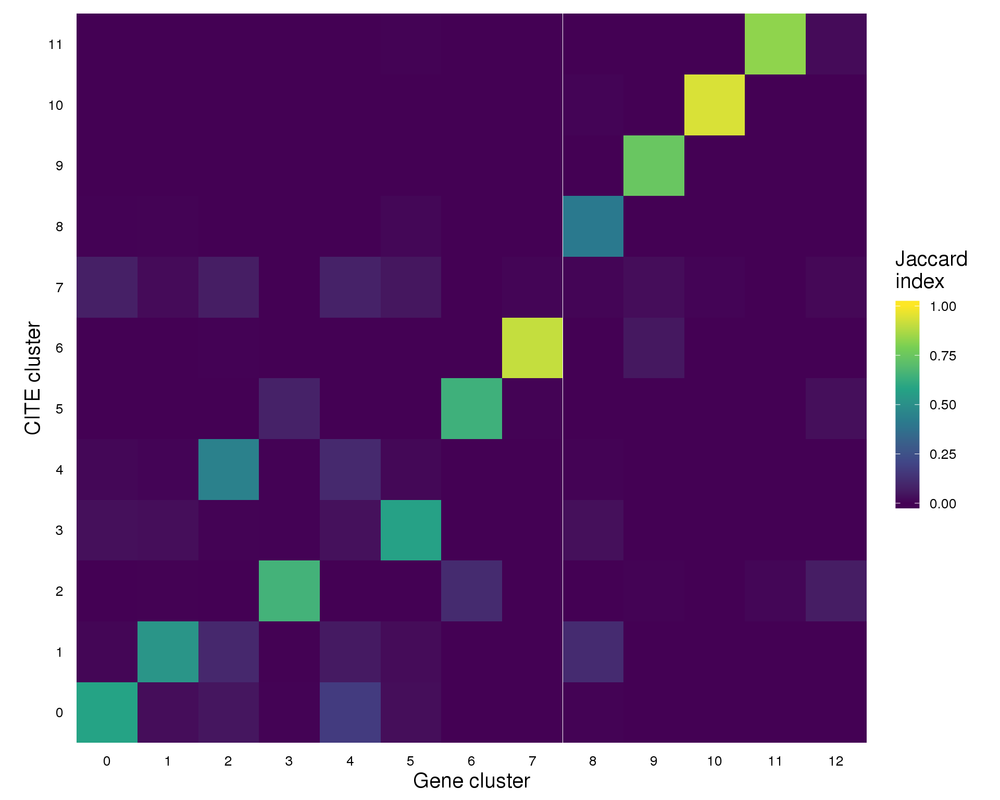
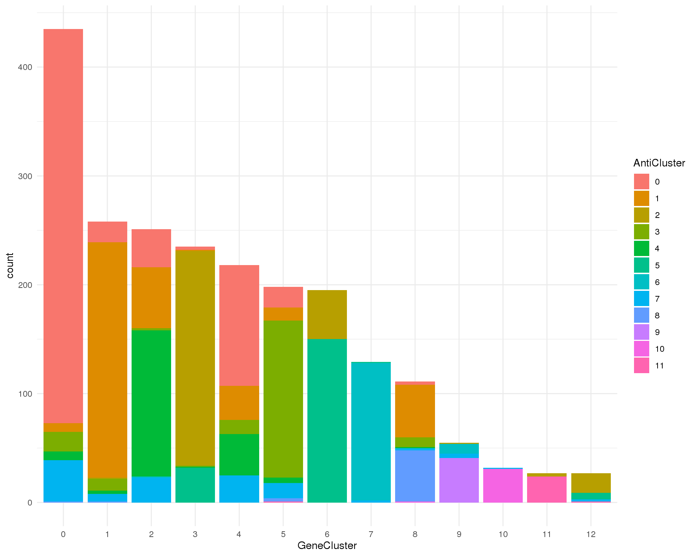

Cluster comparison
2019-06-26
Last updated: 2019-06-26
Checks: 6 1
Knit directory: OzSingleCells2019/
This reproducible R Markdown analysis was created with workflowr (version 1.4.0). The Checks tab describes the reproducibility checks that were applied when the results were created. The Past versions tab lists the development history.
The R Markdown file has staged changes. To know which version of the R Markdown file created these results, you’ll want to first commit it to the Git repo. If you’re still working on the analysis, you can ignore this warning. When you’re finished, you can run wflow_publish to commit the R Markdown file and build the HTML.
Great job! The global environment was empty. Objects defined in the global environment can affect the analysis in your R Markdown file in unknown ways. For reproduciblity it’s best to always run the code in an empty environment.
The command set.seed(20190619) was run prior to running the code in the R Markdown file. Setting a seed ensures that any results that rely on randomness, e.g. subsampling or permutations, are reproducible.
Great job! Recording the operating system, R version, and package versions is critical for reproducibility.
Nice! There were no cached chunks for this analysis, so you can be confident that you successfully produced the results during this run.
Great job! Using relative paths to the files within your workflowr project makes it easier to run your code on other machines.
Great! You are using Git for version control. Tracking code development and connecting the code version to the results is critical for reproducibility. The version displayed above was the version of the Git repository at the time these results were generated.
Note that you need to be careful to ensure that all relevant files for the analysis have been committed to Git prior to generating the results (you can use wflow_publish or wflow_git_commit). workflowr only checks the R Markdown file, but you know if there are other scripts or data files that it depends on. Below is the status of the Git repository when the results were generated:
Ignored files:
Ignored: .DS_Store
Ignored: .Rhistory
Ignored: .Rproj.user/
Ignored: ._.DS_Store
Ignored: analysis/cache/
Ignored: data/._antibody_genes.tsv
Ignored: data/._antibody_genes.txt
Ignored: docs/.DS_Store
Ignored: docs/._.DS_Store
Ignored: output/03-comparison.Rmd/
Ignored: output/06-cluster-comparison.Rmd/
Ignored: packrat/lib-R/
Ignored: packrat/lib-ext/
Ignored: packrat/lib/
Ignored: packrat/src/
Untracked files:
Untracked: docs/figure/06-cluster-comparison.Rmd/
Staged changes:
New: R/crossover.R
Modified: README.md
New: analysis/06-cluster-comparison.Rmd
Modified: analysis/index.Rmd
Note that any generated files, e.g. HTML, png, CSS, etc., are not included in this status report because it is ok for generated content to have uncommitted changes.
There are no past versions. Publish this analysis with wflow_publish() to start tracking its development.
#### LIBRARIES ####
# Package conflicts
library("conflicted")
# Single-cell
library("SingleCellExperiment")
# Plotting
library("clustree")
# File paths
library("fs")
library("here")
# Presentation
library("knitr")
library("jsonlite")
# Tidyverse
library("tidyverse")
### CONFLICT PREFERENCES ####
conflict_prefer("path", "fs")
conflict_prefer("rename", "dplyr")
### SOURCE FUNCTIONS ####
source(here("R/output.R"))
source(here("R/crossover.R"))
### OUTPUT DIRECTORY ####
OUT_DIR <- here("output", DOCNAME)
dir_create(OUT_DIR)
#### SET GGPLOT THEME ####
theme_set(theme_minimal())
#### SET PATHS ####
source(here("R/set_paths.R"))Introduction
In this document we are going to compare the clustering results for the RNA-seq and CITE data to see how similar they are to each other.
if (all(file_exists(c(PATHS$sce_clust, PATHS$cite_clust)))) {
sce <- read_rds(PATHS$sce_clust)
cite <- read_rds(PATHS$cite_clust)
} else {
stop("Clustered dataset is missing. ",
"Please run '04-clustering.Rmd' and '05-cite-clustering.Rmd' first.",
call. = FALSE)
}
clust_data <- colData(sce) %>%
as.data.frame() %>%
select(Barcode, GeneCluster = Cluster) %>%
mutate(AntiCluster = colData(cite)$Cluster)Clustering
Clustering “tree”
clust_data %>%
rename(Cluster1 = GeneCluster, Cluster2 = AntiCluster) %>%
clustree(prefix = "Cluster", show_axis = TRUE) +
scale_y_continuous(
breaks = c(0, 1),
labels = c("CITE cluster", "RNA cluster")
)Jaccard index
plot_data <- summariseClusts(clust_data, GeneCluster, AntiCluster) %>%
replace_na(list(Jaccard = 0))
ggplot(plot_data, aes(x = GeneCluster, y = AntiCluster, fill = Jaccard)) +
geom_tile() +
scale_fill_viridis_c(limits = c(0, 1), name = "Jaccard\nindex") +
coord_equal() +
labs(
x = "Gene cluster",
y = "CITE cluster"
) +
theme(axis.text = element_text(size = 10, colour = "black"),
axis.ticks = element_blank(),
axis.title = element_text(size = 15),
legend.key.height = unit(30, "pt"),
legend.title = element_text(size = 15),
legend.text = element_text(size = 10),
panel.grid = element_blank())
Bars
Gene clusters
ggplot(clust_data, aes(x = GeneCluster, fill = AntiCluster)) +
geom_bar()
CITE clusters
ggplot(clust_data, aes(x = AntiCluster, fill = GeneCluster)) +
geom_bar()
Markers
cite_corr_mat <- logcounts(cite) %>%
t() %>%
cor(method = "spearman")
cite_corr_order <- hclust(dist(cite_corr_mat))$order
cite_corr_levels <- rownames(cite_corr_mat)[cite_corr_order]
cite_props <- crossing(
Cluster = clust_data$AntiCluster,
Antibody = rownames(cite)
) %>%
mutate(
AntiClust = map2_dbl(Cluster, Antibody, function(c, a) {
sum(counts(cite)[a, clust_data$AntiCluster == c])
})
) %>%
group_by(Antibody) %>%
mutate(AntiTotal = sum(AntiClust)) %>%
group_by(Cluster) %>%
mutate(ClustTotal = sum(AntiClust)) %>%
ungroup() %>%
mutate(
AntiClustProp = AntiClust / ClustTotal,
AntiDataProp = AntiTotal / sum(counts(cite)),
Ratio = AntiClustProp / AntiDataProp
)
ggplot(cite_props,
aes(
x = factor(str_remove(Antibody, "Anti-"),
levels = str_remove(cite_corr_levels, "Anti-")),
y = Ratio,
colour = log10(Ratio)
)) +
annotate("rect", xmin = -Inf, xmax = Inf, ymin = -Inf, ymax = 2,
fill = "grey", colour = "grey", alpha = 0.3) +
geom_hline(yintercept = 2, colour = "red") +
geom_point() +
scale_colour_viridis_c() +
facet_wrap(~ Cluster, ncol = 1, strip.position = "right", scales = "free_y") +
labs(
title = "Anitbody proportions",
y = "(Cluster proportion) / (Dataset proportion)"
) +
theme(
axis.title.x = element_blank(),
axis.text.x = element_text(angle = 90, hjust = 1, vjust = 0.5),
legend.position = "none",
panel.grid.minor = element_blank(),
panel.grid.major.y = element_blank(),
panel.border = element_rect(color = "black", fill = NA, size = 1)
)Summary
Parameters
This table describes parameters used and set in this document.
params <- list(
)
params <- toJSON(params, pretty = TRUE)
kable(fromJSON(params))Output files
This table describes the output files produced by this document. Right click and Save Link As… to download the results.
kable(data.frame(
File = c(
download_link("parameters.json", OUT_DIR)
),
Description = c(
"Parameters set and used in this analysis"
)
))| File | Description |
|---|---|
| parameters.json | Parameters set and used in this analysis |
Session information
sessioninfo::session_info()─ Session info ──────────────────────────────────────────────────────────
setting value
version R version 3.6.0 (2019-04-26)
os CentOS release 6.7 (Final)
system x86_64, linux-gnu
ui X11
language (EN)
collate en_US.UTF-8
ctype en_US.UTF-8
tz Australia/Melbourne
date 2019-06-26
─ Packages ──────────────────────────────────────────────────────────────
! package * version date lib source
assertthat 0.2.1 2019-03-21 [1] CRAN (R 3.6.0)
backports 1.1.4 2019-04-10 [1] CRAN (R 3.6.0)
Biobase * 2.44.0 2019-05-02 [1] Bioconductor
BiocGenerics * 0.30.0 2019-05-02 [1] Bioconductor
BiocParallel * 1.18.0 2019-05-03 [1] Bioconductor
bitops 1.0-6 2013-08-17 [1] CRAN (R 3.6.0)
broom 0.5.2 2019-04-07 [1] CRAN (R 3.6.0)
cellranger 1.1.0 2016-07-27 [1] CRAN (R 3.6.0)
checkmate 1.9.3 2019-05-03 [1] CRAN (R 3.6.0)
cli 1.1.0 2019-03-19 [1] CRAN (R 3.6.0)
clustree * 0.4.0 2019-04-18 [1] CRAN (R 3.6.0)
colorspace 1.4-1 2019-03-18 [1] CRAN (R 3.6.0)
conflicted * 1.0.3 2019-05-01 [1] CRAN (R 3.6.0)
crayon 1.3.4 2017-09-16 [1] CRAN (R 3.6.0)
DelayedArray * 0.10.0 2019-05-02 [1] Bioconductor
digest 0.6.19 2019-05-20 [1] CRAN (R 3.6.0)
dplyr * 0.8.1 2019-05-14 [1] CRAN (R 3.6.0)
evaluate 0.14 2019-05-28 [1] CRAN (R 3.6.0)
farver 1.1.0 2018-11-20 [1] CRAN (R 3.6.0)
forcats * 0.4.0 2019-02-17 [1] CRAN (R 3.6.0)
fs * 1.3.1 2019-05-06 [1] CRAN (R 3.6.0)
generics 0.0.2 2018-11-29 [1] CRAN (R 3.6.0)
GenomeInfoDb * 1.20.0 2019-05-02 [1] Bioconductor
GenomeInfoDbData 1.2.1 2019-06-19 [1] Bioconductor
GenomicRanges * 1.36.0 2019-05-02 [1] Bioconductor
ggforce 0.2.2 2019-04-23 [1] CRAN (R 3.6.0)
ggplot2 * 3.2.0 2019-06-16 [1] CRAN (R 3.6.0)
ggraph * 1.0.2 2018-07-07 [1] CRAN (R 3.6.0)
ggrepel 0.8.1 2019-05-07 [1] CRAN (R 3.6.0)
git2r 0.25.2 2019-03-19 [1] CRAN (R 3.6.0)
glue 1.3.1 2019-03-12 [1] CRAN (R 3.6.0)
gridExtra 2.3 2017-09-09 [1] CRAN (R 3.6.0)
gtable 0.3.0 2019-03-25 [1] CRAN (R 3.6.0)
haven 2.1.0 2019-02-19 [1] CRAN (R 3.6.0)
here * 0.1 2017-05-28 [1] CRAN (R 3.6.0)
highr 0.8 2019-03-20 [1] CRAN (R 3.6.0)
hms 0.4.2 2018-03-10 [1] CRAN (R 3.6.0)
htmltools 0.3.6 2017-04-28 [1] CRAN (R 3.6.0)
httr 1.4.0 2018-12-11 [1] CRAN (R 3.6.0)
igraph 1.2.4.1 2019-04-22 [1] CRAN (R 3.6.0)
IRanges * 2.18.1 2019-05-31 [1] Bioconductor
jsonlite * 1.6 2018-12-07 [1] CRAN (R 3.6.0)
knitr * 1.23 2019-05-18 [1] CRAN (R 3.6.0)
labeling 0.3 2014-08-23 [1] CRAN (R 3.6.0)
P lattice 0.20-38 2018-11-04 [5] CRAN (R 3.6.0)
lazyeval 0.2.2 2019-03-15 [1] CRAN (R 3.6.0)
lubridate 1.7.4 2018-04-11 [1] CRAN (R 3.6.0)
magrittr 1.5 2014-11-22 [1] CRAN (R 3.6.0)
P MASS 7.3-51.4 2019-04-26 [5] CRAN (R 3.6.0)
P Matrix 1.2-17 2019-03-22 [5] CRAN (R 3.6.0)
matrixStats * 0.54.0 2018-07-23 [1] CRAN (R 3.6.0)
memoise 1.1.0 2017-04-21 [1] CRAN (R 3.6.0)
modelr 0.1.4 2019-02-18 [1] CRAN (R 3.6.0)
munsell 0.5.0 2018-06-12 [1] CRAN (R 3.6.0)
P nlme 3.1-139 2019-04-09 [5] CRAN (R 3.6.0)
pillar 1.4.1 2019-05-28 [1] CRAN (R 3.6.0)
pkgconfig 2.0.2 2018-08-16 [1] CRAN (R 3.6.0)
plyr 1.8.4 2016-06-08 [1] CRAN (R 3.6.0)
polyclip 1.10-0 2019-03-14 [1] CRAN (R 3.6.0)
purrr * 0.3.2 2019-03-15 [1] CRAN (R 3.6.0)
R6 2.4.0 2019-02-14 [1] CRAN (R 3.6.0)
Rcpp 1.0.1 2019-03-17 [1] CRAN (R 3.6.0)
RCurl 1.95-4.12 2019-03-04 [1] CRAN (R 3.6.0)
readr * 1.3.1 2018-12-21 [1] CRAN (R 3.6.0)
readxl 1.3.1 2019-03-13 [1] CRAN (R 3.6.0)
rlang 0.3.4 2019-04-07 [1] CRAN (R 3.6.0)
rmarkdown 1.13 2019-05-22 [1] CRAN (R 3.6.0)
rprojroot 1.3-2 2018-01-03 [1] CRAN (R 3.6.0)
rstudioapi 0.10 2019-03-19 [1] CRAN (R 3.6.0)
rvest 0.3.4 2019-05-15 [1] CRAN (R 3.6.0)
S4Vectors * 0.22.0 2019-05-02 [1] Bioconductor
scales 1.0.0 2018-08-09 [1] CRAN (R 3.6.0)
sessioninfo 1.1.1 2018-11-05 [1] CRAN (R 3.6.0)
SingleCellExperiment * 1.6.0 2019-05-02 [1] Bioconductor
stringi 1.4.3 2019-03-12 [1] CRAN (R 3.6.0)
stringr * 1.4.0 2019-02-10 [1] CRAN (R 3.6.0)
SummarizedExperiment * 1.14.0 2019-05-02 [1] Bioconductor
tibble * 2.1.3 2019-06-06 [1] CRAN (R 3.6.0)
tidygraph 1.1.2 2019-02-18 [1] CRAN (R 3.6.0)
tidyr * 0.8.3 2019-03-01 [1] CRAN (R 3.6.0)
tidyselect 0.2.5 2018-10-11 [1] CRAN (R 3.6.0)
tidyverse * 1.2.1 2017-11-14 [1] CRAN (R 3.6.0)
tweenr 1.0.1 2018-12-14 [1] CRAN (R 3.6.0)
viridis 0.5.1 2018-03-29 [1] CRAN (R 3.6.0)
viridisLite 0.3.0 2018-02-01 [1] CRAN (R 3.6.0)
withr 2.1.2 2018-03-15 [1] CRAN (R 3.6.0)
workflowr 1.4.0 2019-06-08 [1] CRAN (R 3.6.0)
xfun 0.7 2019-05-14 [1] CRAN (R 3.6.0)
xml2 1.2.0 2018-01-24 [1] CRAN (R 3.6.0)
XVector 0.24.0 2019-05-02 [1] Bioconductor
yaml 2.2.0 2018-07-25 [1] CRAN (R 3.6.0)
zlibbioc 1.30.0 2019-05-02 [1] Bioconductor
[1] /group/bioi1/luke/analysis/OzSingleCells2019/packrat/lib/x86_64-pc-linux-gnu/3.6.0
[2] /group/bioi1/luke/analysis/OzSingleCells2019/packrat/lib-ext/x86_64-pc-linux-gnu/3.6.0
[3] /group/bioi1/luke/analysis/OzSingleCells2019/packrat/lib-R/x86_64-pc-linux-gnu/3.6.0
[4] /home/luke.zappia/R/x86_64-pc-linux-gnu-library/3.6
[5] /usr/local/installed/R/3.6.0/lib64/R/library
P ── Loaded and on-disk path mismatch.